タマ活 更新履歴 何を・どこを・どう直したかを、直す前と直した後の画面つきでまとめています。新しい更新ほど上です。
2026-11-04
メンター追加と、本人アカウントだけのプロフィール編集 管理画面デモにメンターの新規登録と、編集できるGoogleメールアドレスの紐づけを追加しました。
メンターを追加し、編集する本人を設定
追加した機能 管理者が「メンターを追加」から表示名・本人のGoogleメールアドレスを登録できます。登録後はプロフィール詳細から紐づけを変更できます。
編集できる人 紐づけたアカウントの保持者だけが本文・写真を編集できます。管理者を含むほかのアカウントは閲覧のみです。管理者は追加・紐づけ・アカウント設定を行えます。
確認方法 デモをログアウトし、「登録したデモアカウントで確認」で追加したアカウントを選択すると、本人の編集画面を試せます。
デモの範囲 Google認証・共有APIは未接続です。編集はこのブラウザー内だけに保存されます。実際の本人確認・アクセス制限にはAPI接続が必要です。架空のメールアドレスでお試しください。 変更前：追加・本人紐づけのない一覧 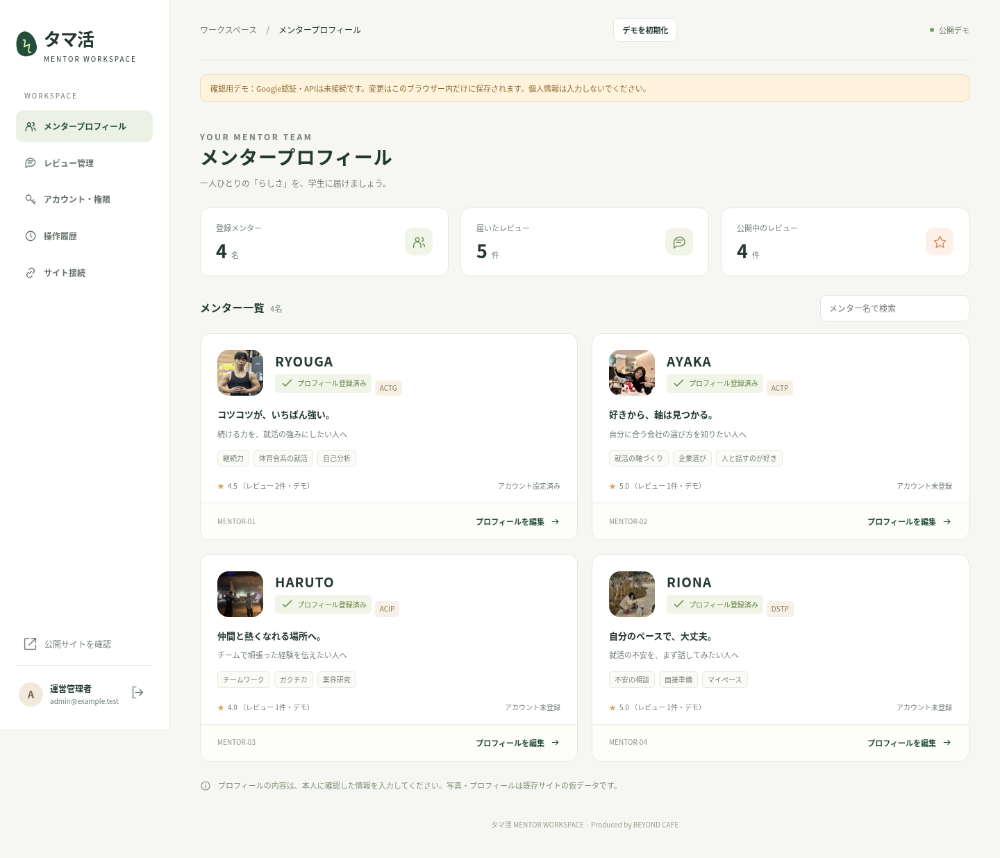
変更後：メンター追加と閲覧のみの表示 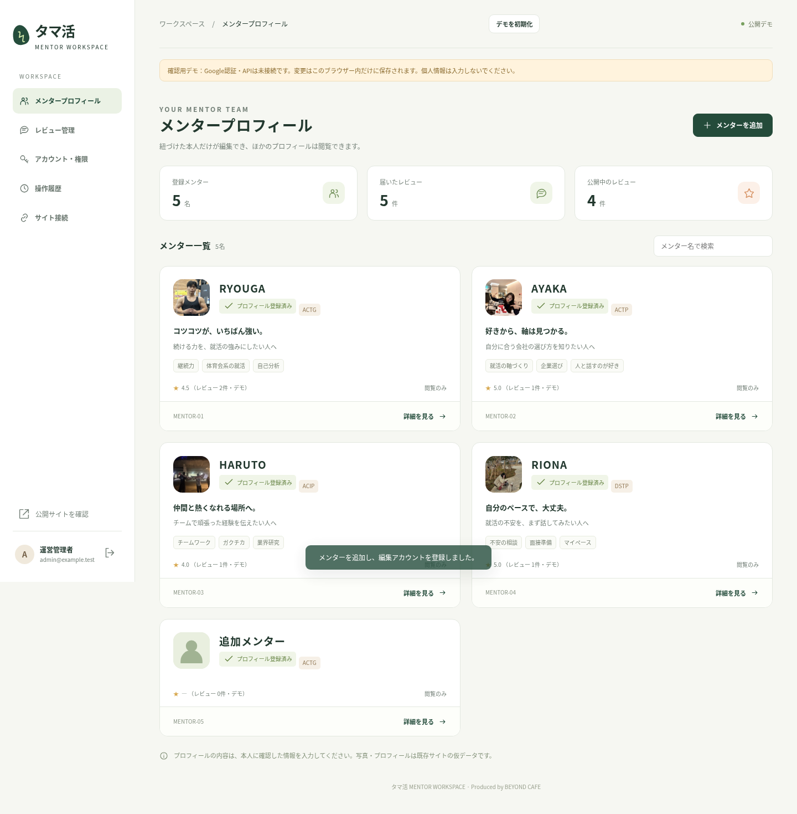
プロフィール詳細で編集アカウントを設定 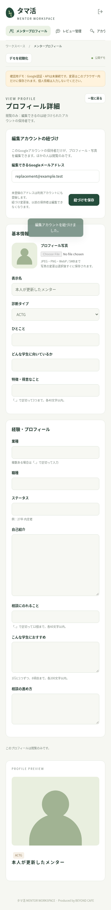
2026-11-04
メンター管理画面を、別URLで試せる公開デモとして追加 プロフィール編集・レビュー管理・アカウント権限設定の操作を、API接続前に確認できるようにしました。
既存サイトと分けた管理画面デモ
できること プロフィール・写真の編集、レビューの公開／非公開、Googleメールアドレスへの権限付与画面、操作履歴、スマートフォン表示を試せます。
現在の保存先 編集内容は操作したブラウザー内だけに保存されます。既存サイトや他の利用者には反映されません。実在するメールアドレス・個人情報は入力しないでください。
今後の接続 Googleの実ログイン、サーバー側の権限管理、共有データの保存はAPI接続時に追加します。現在のロール切り替えは確認用デモです。 追加前：既存のメンター紹介ページ 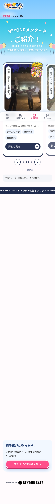
追加後：別URLの管理画面デモ 2026-11-02
電話番号の入力をやめて、診断結果をメールで受け取れるように。結果の続きは公式LINEで 公式LINEの登録学生を増やす方針に合わせて、入力画面と結果画面を変えました。
孵化の前の入力画面から、電話番号をなくした
どこを 診断のあと、結果の前に出る入力画面
どう直した 電話番号の入力欄と、お電話に同意するチェックを、なくしました。メールアドレスは残し、「診断結果をメールで受け取る（任意）」にしました。入れなくても進めます。
なぜ 電話でのご案内をやめ、公式LINEで学生とつながる方針にしたため。
補足 性別は、これまでどおり必須です。メールアドレスの使いみち（診断結果のお届けと、面談・イベントのご案内）を、画面に書きました。 直す前 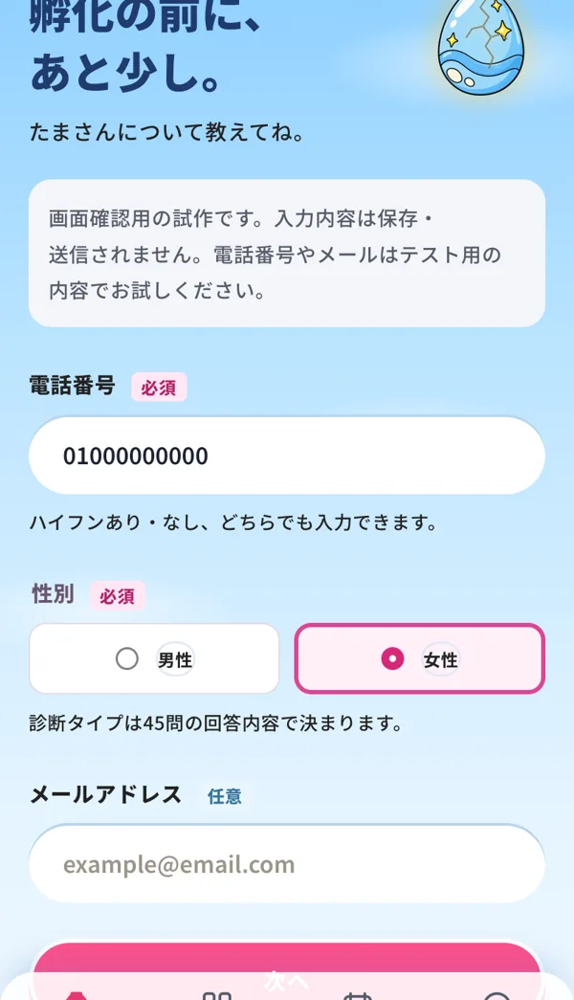
直した後 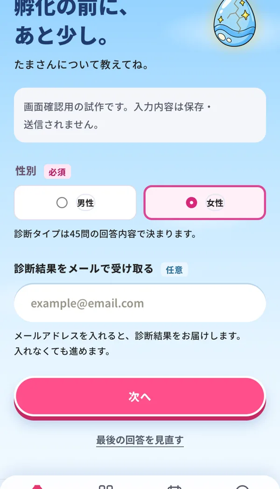
診断結果の下のほうを、ぼかして隠せるように
どこを 診断結果の「02 あなたの弱み・苦手なこと」から下
どう直した 「01 あなたの強み」までは、そのまま見られます。それより下は、ぼかして隠し、「公式LINEを追加して続きを見る」ボタンを出します。ボタンを押すと、ぼかしが外れ、そのあともずっと見られます。
いまの状態 公式LINEのURLが、まだ入っていないため、いまは、ぼかしは出ません。URLを入れると、自動でぼかしが出るようになります。見た目の確認用に、アドレスの最後に「?gate=1」を付けると、いまでも出せます。
補足 診断の文章そのものは、変えていません。 直す前 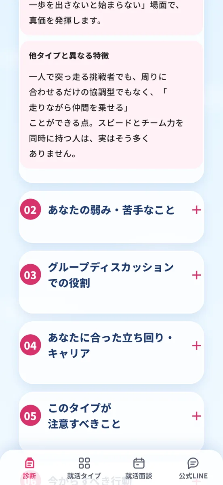
直した後 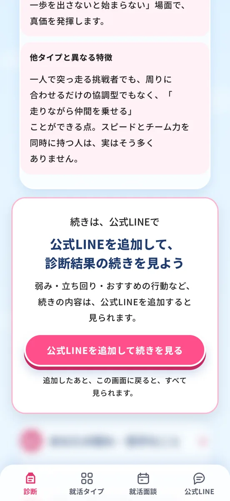
2026-11-02
入力中にタブバーが重なるのを直した。スマホで、中途半端な改行を整えた 本物のiPhoneのSafariとスマホ幅（390px）で見て、見づらかった所を直しました。文章そのものは変えていません。
文字を入力しているとき、下のタブバーが重ならないように
どこを 入力欄をタップしてキーボードが出たときの画面（孵化前の入力フォームなど）
どう直した 入力しているあいだは、下のタブバーを隠すようにしました。入力が終わると、また出ます。
なぜ キーボードの上にタブバーが浮いて、メールアドレスの入力欄などに重なっていたため。 直す前 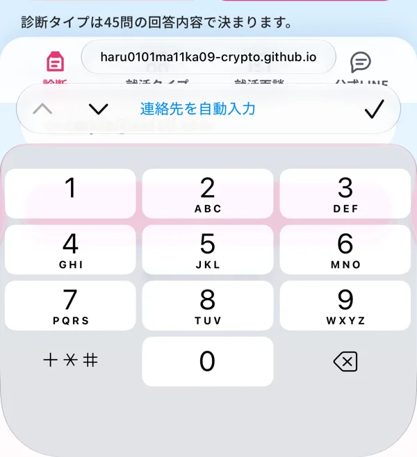
直した後 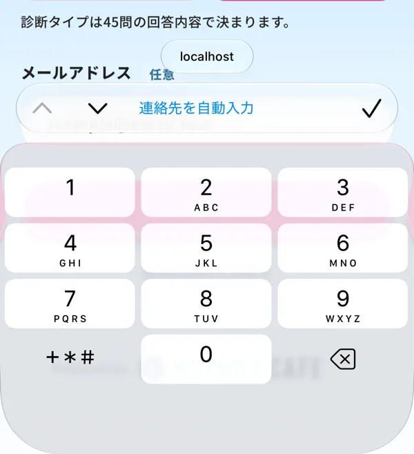
見出しが「こと」だけ次の行に落ちるのを直した
どこを 診断結果の「あなたの弱み・苦手なこと」など、開閉する見出し
どう直した 見出しの文字を少し小さくして、1行に収めました。2行になる見出しは、行の長さがそろうようにしました。
なぜ 「苦手な／こと」「ディスカッシ／ョンでの役割」のように、文の途中で切れていたため。 直す前 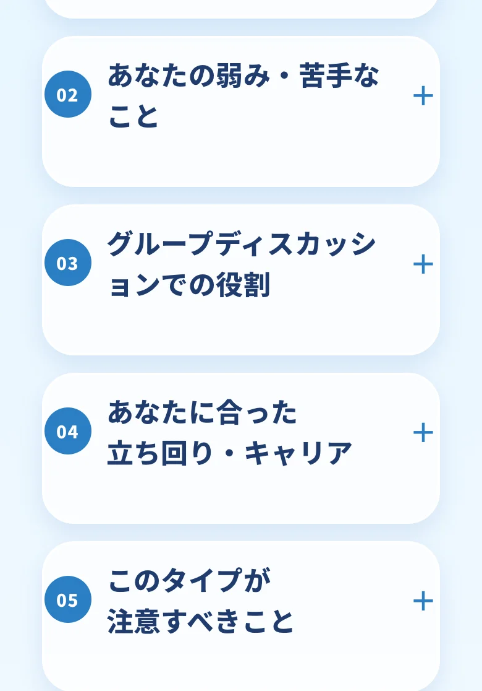
直した後 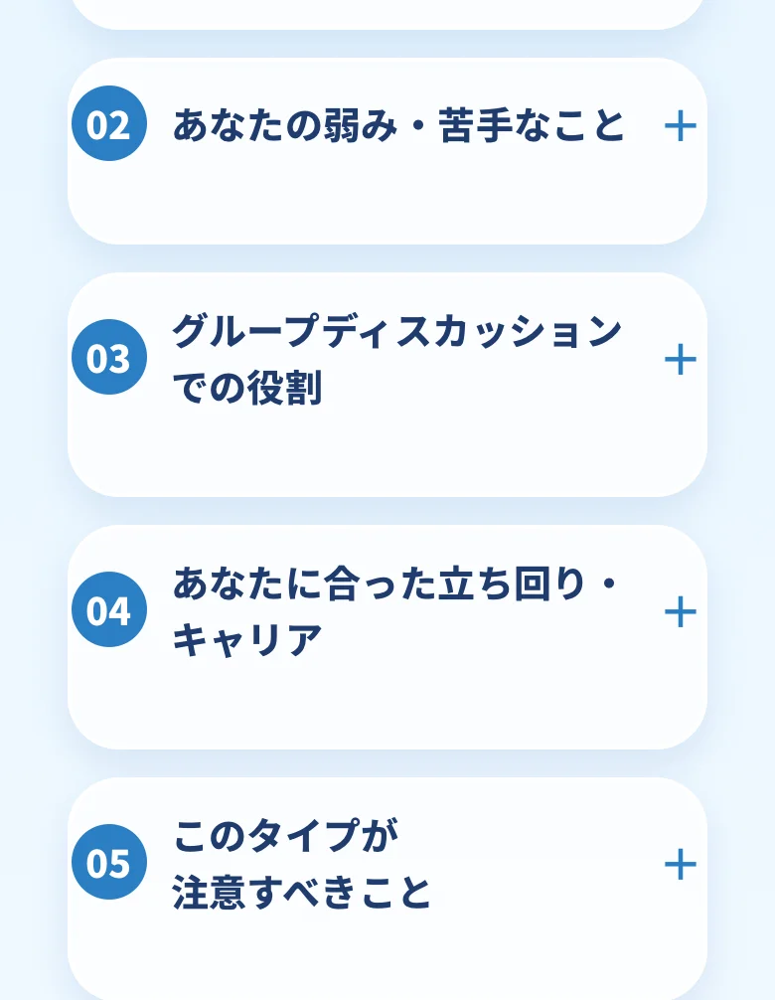
結果画面の下のボタンを、1行に
どこを 「結果をコピー」「診断結果を保存」「もう一度診断する」
どう直した 文字を少しだけ小さくして、折り返さないようにしました。
なぜ 「診断結果を／保存」のように、ボタンの中で2行に割れていたため。 就活面談の黒いブロックの見出しを、1行に
どこを 「あなたらしさを、一緒に深める。」
どう直した 少し小さくして、1行に収めました。もっと狭い画面では、行の長さが半分ずつになります。
なぜ 「深める。」だけが次の行に残っていたため。 直す前 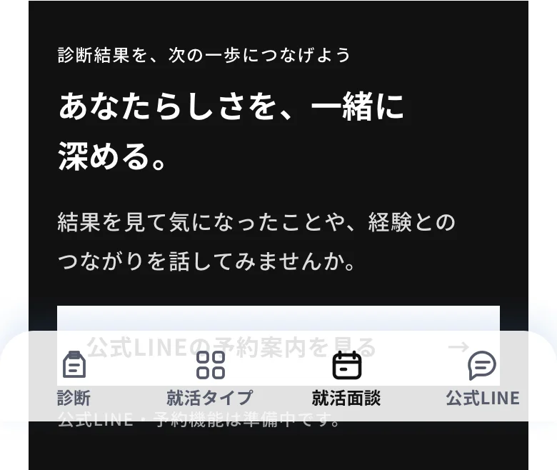
直した後 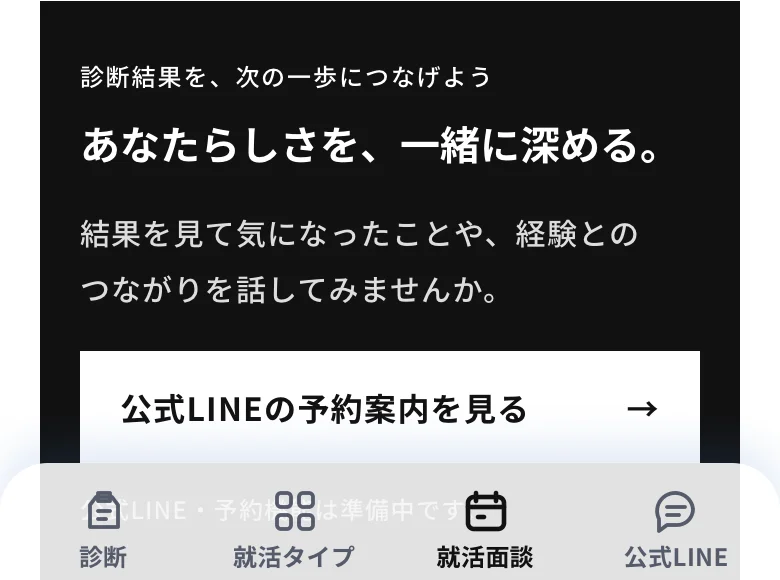
そのほか
見出し・説明文 見出しは行の長さがそろうように、説明文は1〜2文字だけ次の行に残らないようにしました。
「診断でわかること」のカード 左右の余白を少し詰めて、「こと。」だけ次の行に落ちるのを減らしました。 2026-11-02
レアカードの光が、iPhoneで四角く見えていたのを直した 本物のiPhoneのSafariで、レアカードを開いて確認しました。
カードの四隅のベージュの四角を消し、光をきれいに
どこを 結果画面で出る、レアカード
どう直した カードの後ろに、ぼかした金色の光を置く作り方に変えました。
なぜ iPhoneでは、光の効果が四隅で四角く切れて、ベージュの角が見えていたため。 直す前 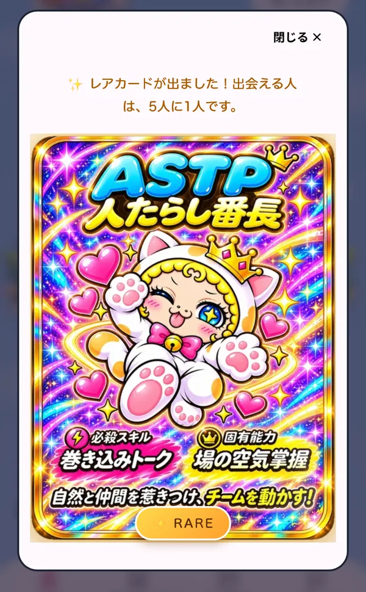
直した後 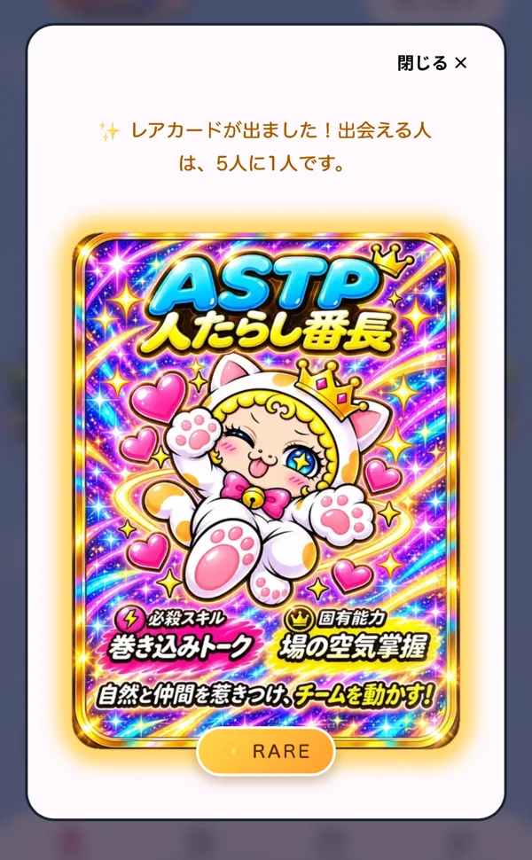
2026-11-02
就活面談の黒いブロックの青い文字を、白に。カードの閉じるボタンの枠を消した 本物のiPhoneのSafariで見て、見づらかった2か所を直しました。
「あなたらしさを、一緒に深める。」を白い文字に
どこを 就活面談タブの、黒いブロック（「診断結果を、次の一歩につなげよう」「あなたらしさを、一緒に深める。」）
どう直した 黒い背景の上で、濃い青になっていた見出しを、白にしました。上の小さな見出しも、白にそろえました。
なぜ 黒い背景に、濃い青の文字では、ほとんど読めなかったため。 直す前 直した後 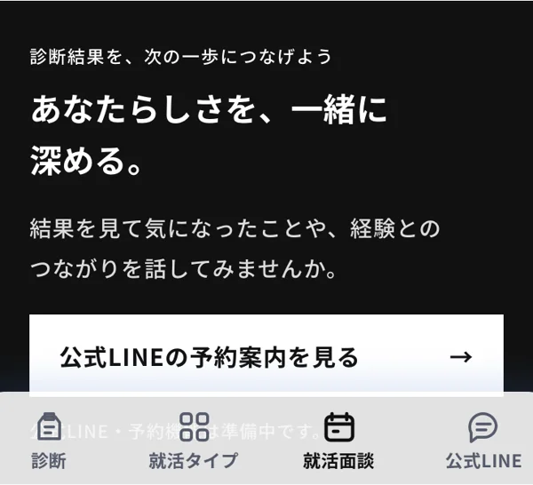
カードの「閉じる」ボタンの四角い青枠を消した
どこを 結果画面で、タイプカードを開いたときの「閉じる ×」ボタン
どう直した カードを開くと、閉じるボタンが選ばれた状態になり、四角い青い枠が出ていました。この枠を出さないようにしました。
補足 ボタンを押して閉じる操作は、今までどおりです。 2026-11-02
iPhoneで、卵を選ぶ画面が、右に切れていたのを直した Xcodeのシミュレーター（本物のiPhone 17のSafari）で、LPを開いて確認したところ、これまでの確認では見つからなかった、ずれが見つかりました。
ニックネームを入れたあと、画面が、右に切れる
どこを トップのニックネーム入力欄と、そのあとの「卵を選ぼう」の画面
どう直した 入力欄の文字の大きさを、15pxから16pxにしました。
なぜ iPhoneのSafariは、16px未満の入力欄をタップすると、画面を自動で拡大します。拡大されたまま戻らないので、次の画面で、29卒のカードと「診断をはじめる」ボタンが、右にはみ出して見えていました。16px以上にすると、拡大されません。
補足 今までの確認で見つからなかったのは、パソコン上の模擬では、この自動拡大が起きないためです。今後は、本物のiPhoneのSafariでも確認します。 直す前（iPhone 17 のSafari） 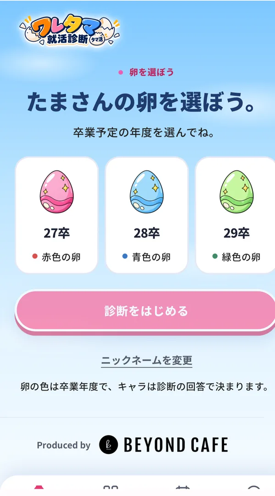
直した後 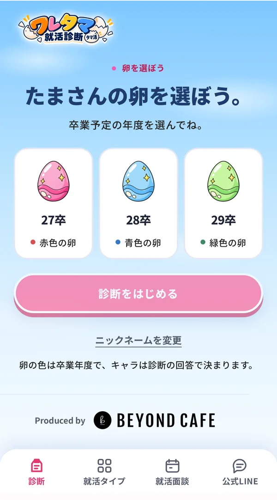
2026-11-02
診断カードを、新しいデザインに。レアカードが、ランダムで出る 結果の画面で開く「タイプカード」を、ドキュメント「カードデザイン最終」の、新しいカードに入れ替えました。カードには、通常版とレア版があり、結果を開くたびに、くじ引きで決まります。
カードを、16タイプ分の新デザインに
どこを 結果画面の「文字入りのタイプカードを見る」を押したときに開くカード
どう直した これまでの、12タイプ分の、まとめ画像から切り出したカード（強み・弱み・向いている環境などを、1枚に詰めたもの）をやめて、16タイプすべての、新しいカード（タイプ名、必殺スキル、固有能力、ひとこと）にしました。ドキュメントの画像から、カードの部分だけを切り抜き、余白の白や黄色の枠を消して、角をまるくそろえています。
なぜ タイプごとにデザインが決まった、最終版のカードを、そのまま見せるため。
補足 「強み・弱み」などの詳しい内容は、結果画面の本文に、今までどおり載っています。カードを拡大する「文字を拡大」ボタンは、カードの文字が大きくなったので、外しました。 直す前 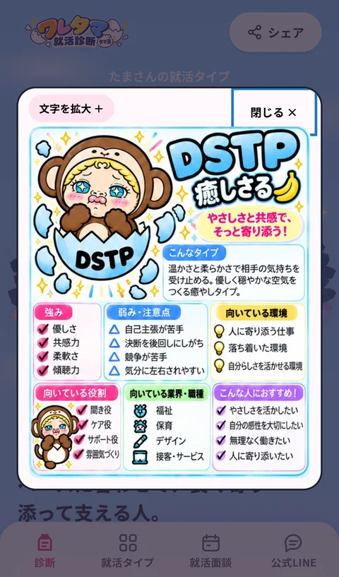
直した後（通常版） 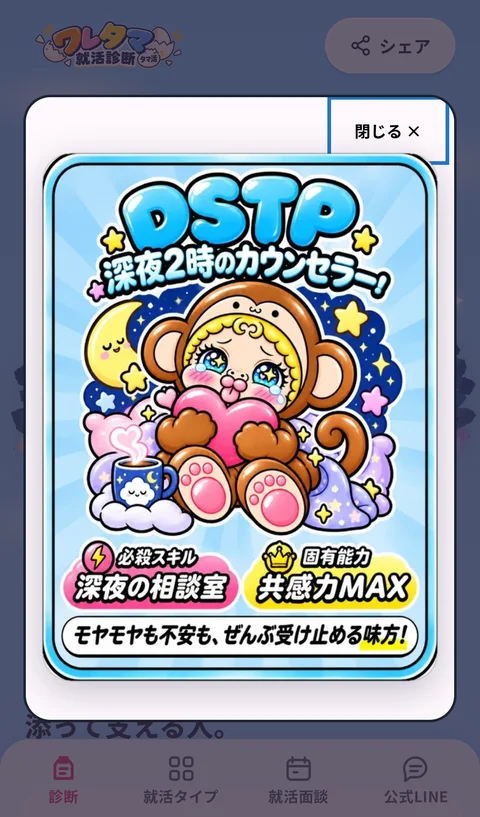
レアカードが、ランダムで出る
どこを 結果画面と、カードの画面
どう直した 結果を開くたびに、くじ引きをして、5人に1人（20%）の確率で、レア版のカードが出ます。レアのときは、結果画面のボタンが「✨ レアカードが出た！」に変わり、カードの画面に、「レアカードが出ました！出会える人は、5人に1人です。」と、金色の「RARE」の印と、光るふちが付きます。ふだんの通常版は、これまでどおりです。
なぜ 結果を見るたびに、小さな楽しみがあり、「もう一度診断したい」「友だちに見せたい」と思えるようにするため。
補足 レアの確率は、プログラムの1か所（CARD_RARE_RATE）で変えられます。 レアのときの、結果画面のボタン 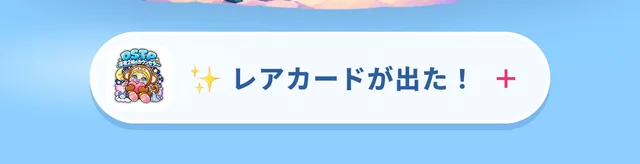
確認したこと・気になる点 iPhoneのSafariと同じ描画エンジンで、通常版とレア版の、両方のカードが開くこと、横スクロールが出ないこと、32枚の画像が、すべて読み込めることを確認しました。パソコンの画面でも、カードは、画面に収まります。気になる点が、1つあります。「人たらし番長」（ACTP）のカードの絵の中の文字が、「ASTP」になっています（ドキュメントの画像のままです）。絵の文字は、あとから直せないので、正しい画像に差し替えが必要です。
2026-11-01
メンター紹介：「いいことがいっぱい！」のメリットを、10個から5個に メリットが多すぎて読みにくかったので、内容の近いものをまとめて、5個にしました。
メリット5個
まとめ方 ①先輩のリアルな就活が聞ける（体験談＋会社選びの軸）、②自分の強みが見つかる（強み＋診断結果を読み解く）、③やることが整理できる（スケジュール＋ES・面接の準備）、④不安や焦りを話せる（不安＋「何を聞けばいいか」からでOK）、⑤合う先輩と、オンラインで気軽に（先輩を選べる＋オンライン・学生は無料）。文章は mentors-data.js の MENTOR_PAGE で書きかえられます。 直す前 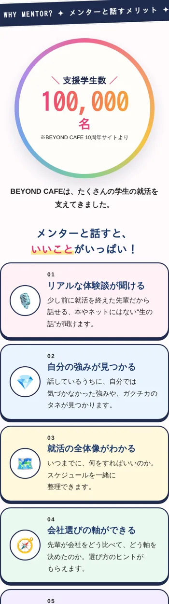
直した後 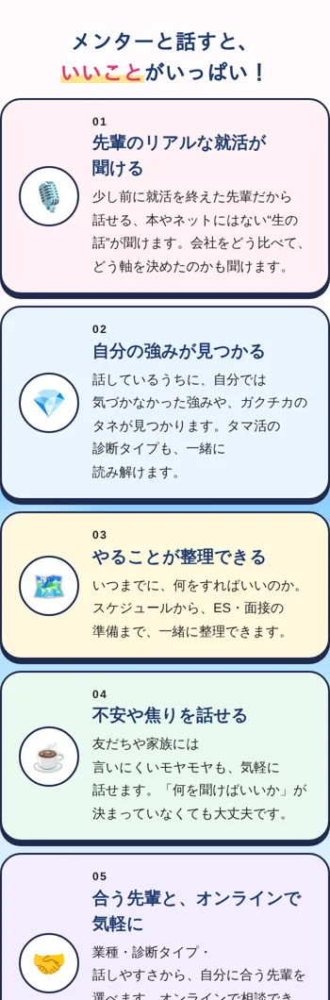
2026-11-01
就活面談：赤いカードの上のキャラクターを外す 就活面談の「MENTOR メンターをご紹介」の赤いカードの上で歩いていた、ワレタマのキャラクター3体を外しました。カードの上の余白も、元の広さに戻しています。赤いカード・押したときの動き・右下の矢印の動きは、そのままです。
キャラクターなしの赤いカード 直す前 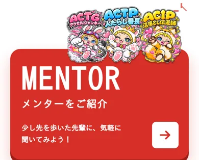
直した後 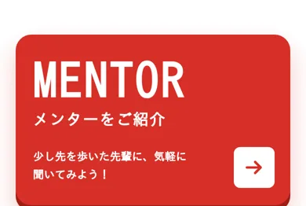
2026-11-01
メンター紹介：見出しを、背景になじむデザインに 「BEYONDメンターをご紹介！」の見出しが、枠と影のある箱になっていて、ボタンのように見えて押したくなってしまうので、背景になじむデザインにしました。
ボタンに見えない見出しに
どう直した まわりの太い枠と、下の影をなくしました。水色は、下に行くほど、うすくなって、ページの空の色につながるようにしました。文字は、シールのような縁取りと、ずらした影をやめて、平らな白い文字にしました（読みやすいよう、ほんの少しだけ、ぼかした影をつけています）。「就活を終えた先輩に、気軽に聞いてみよう」も、白い枠をやめて、ただの白い文字にしました。風船は、文字にかからないよう、下のほうに置きました。 2026-11-01
メンター紹介：流れる文字の帯を、まっすぐに 「メンターと話すメリット」の上の、流れる文字の帯が、ななめになっていたのを、まっすぐにしました。文字のつなぎ目で「✦WHY」と間がつまっていたところにも、すきまを入れました。
帯をまっすぐに
直す前 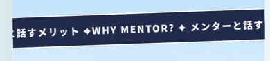
直した後 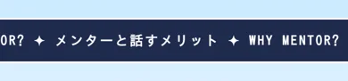
2026-11-01
就活面談：メンター紹介への入口を、押したくなる赤いカードに 就活面談のページの「メンターのプロフィールを見る」を、赤い大きなカードにして、上でワレタマのキャラクターがぴょこぴょこ歩くようにしました。
赤いカードと、歩くキャラクター
どう直した 大きな「MENTOR」と「メンターをご紹介」、「少し先を歩いた先輩に、気軽に聞いてみよう！」を、赤いカードに入れました。カード全体がボタンで、どこを押してもメンター紹介に進みます。右下の白い四角の矢印は、右へ「くいっ」と動いて、押せることを伝えます。押すと沈み、パソコンでマウスをのせると少し浮きます。カードの上には、メンターの診断タイプのキャラクター3体（メンターのデータから自動で選びます）が、左右にゆれながら、ぴょこぴょこ歩いています。スマホで「動きを減らす」設定の人には、動きなしで表示します。 2026-11-01
メンター紹介の下に「メンターと話すメリット」を追加 メンターのカードの下に、流れる文字の帯、支援学生数の数字、メンターと話すメリット10個、ボタンを足しました。
メンターと話すメリット
どう直した 「WHY MENTOR? ✦ メンターと話すメリット ✦」の文字が、横に流れつづける帯を置きました。その下に、虹色のふちの丸で「支援学生数 100,000名」（画面に入ると0から数字がふえていきます）と、出どころの「※BEYOND CAFE 10周年サイトより」を出しています。見出し「メンターと話すと、いいことがいっぱい！」のあと、メリット10個を、色ちがいのカードで並べました。カードは、スクロールすると下からふわっと出てきます（パソコンでは左右から）。最後に「メンターを選んでみる」（上のカードへ戻る）と「公式LINEで相談する」のボタンを置きました。スマホで「動きを減らす」設定の人には、動きなしで、最初から全部表示します。
数字について 数字は、BEYOND CAFE 10周年サイトに載っている「支援学生数 100,000名」だけを使っています。確認がとれていない数字（満足度など）は入れていません。数字とメリットの文章は mentors-data.js の MENTOR_PAGE で書きかえられます。 直した後
2026-11-01
上のロゴを押すとトップへ。メンター紹介の説明文を外す 画面の上の「ワレタマ 就活診断」のロゴを押すと、どのページからでもトップに戻れるようにしました。メンター紹介の見出しの下の「4人のメンターが、順番に登場します…」の文は外しました。
ロゴでトップへ
どう直した ロゴを、トップへのリンクにしました。押すとトップを表示し、アドレスの「?page=…」も消すので、そのあと再読み込みしてもトップのままです。診断の途中で押しても、回答はこれまでどおり保存されているので、続きから再開できます。押したときに少し大きく・小さくなる動きをつけました（動きを減らす設定の人には動かしません）。就活面談のページは、もともと上のロゴを出さないデザインなので、そのままです。
確認したこと メンター紹介・メンターの詳しく見る・就活タイプ・公式LINEの各ページから、ロゴでトップに戻れること、再読み込みしてもトップのままなことを確かめました。 2026-11-01
メンター紹介：番号を外して、診断タイプのキャラクターを。切りかわりは2秒ごとに 「MENTOR 01」「No.01」などの番号を外し、かわりに、各メンターの診断タイプのキャラクターを、写真の右上にシールのように貼りました。カードが自動で切りかわる間かくを、4.5秒から2秒にしました。
診断タイプのキャラクター
どう直した 写真の右上に、そのメンターの診断タイプのキャラクターを、少しかたむけて貼りました（表示中のカードでは、ぽんっと出てきます。動きを減らす設定の人には動かしません）。お名前の上には「診断タイプ ○○」を出しています。「詳しく見る」のページには「診断タイプ」の項目を足し、「このタイプを見る」から、そのタイプの説明ページへ進めます。いまのタイプは仮です（RYOUGA：アクセルジャンキー、AYAKA：人たらし番長、HARUTO：沼落とし伝道師、RIONA：深夜2時のカウンセラー）。本人の結果が分かったら、mentors-data.js の type を書きかえてください。
番号 カードの「MENTOR 01」のバッジと「No.01」、詳しく見るの「MENTOR No.01」を外しました（30人のときの「3 / 30」の表示は、何人目を見ているかの目安なので残しています）。
切りかわり 自動で切りかわる間かくを2秒にしました。さわったあとに8秒待つこと、一時停止ボタンは、そのままです。 カード 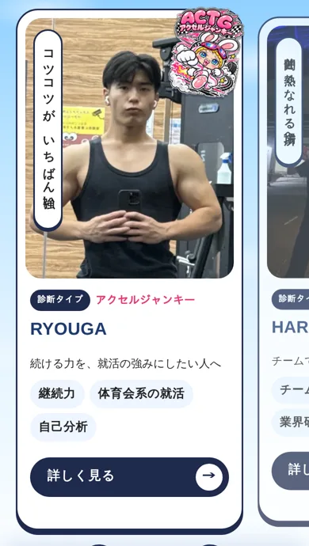
詳しく見るの「診断タイプ」 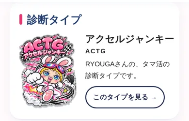
2026-11-01
メンター紹介：見出しを「BEYONDメンターをご紹介！」に。カードが自動で回り、並び順は毎回ランダムに メンター紹介のいちばん上を、風船と紙ふぶきの「BEYONDメンターをご紹介！」の見出しにしました。カードは自動で横に回るようにし、開くたびに並び順が変わるので、毎回同じメンターが先頭に出ることはありません。
見出し「BEYONDメンターをご紹介！」
どう直した 水色の箱の中に、白い太字で、ゆるく弧をえがく「BEYONDメンターを／ご紹介！」（文字は、太くて角ばった Dela Gothic One。読み込めないときは、極太のNoto Sans JP）、その下に「MEET YOUR MENTORS」と「就活を終えた先輩に、気軽に聞いてみよう」を入れました。左右に風船、まわりに紙ふぶきを置いています（絵は、ページの中でかいているので、画像ファイルはありません）。 直す前 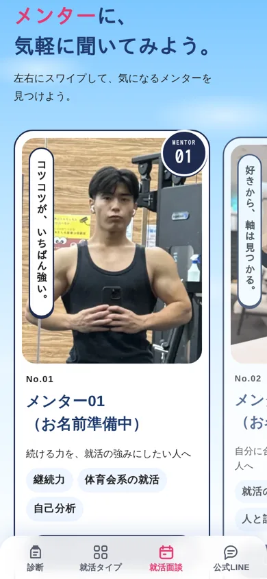
直した後 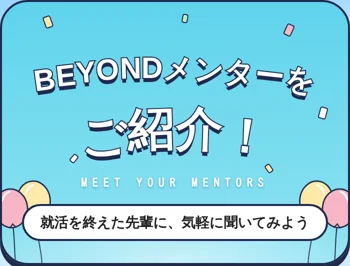
自動で回る・並び順はランダム
どう直した カードが4.5秒ごとに、次のメンターへ自動で進みます。最後まで行くと、最初に戻ります。指でさわったり、矢印を押したりしたあとは8秒待ってから、また回り始めます。マウスをのせている間、画面を見ていない間も止まります。カードの下の「❚❚ 一時停止」で、止めたままにできます（「▶ 自動で回す」で再開）。スマホで「視差効果を減らす（動きを減らす）」設定にしている人には、最初から止めた状態で出します。メンターの並び順は、ページを開くたびにシャッフルします（「詳しく見る」から戻ったときや、前後のメンターへのボタンは、同じ並び順のまま）。メンターが30人ほどに増えても見やすいよう、9人以上のときはドットのかわりに「3 / 30」のような番号を出します。
確認したこと 12回開いて先頭が変わること、自動で順番に進むこと、一時停止中は進まないこと、詳しく見るから戻ると同じメンターに戻ること、動きを減らす設定では回らないことを確かめました。メンターを仮に30人にしたときも、番号の表示、最後から最初に戻る動き、横にはみ出さないこと、写真が必要になってから読み込まれることを確かめました。 2026-11-01
メンターの「詳しく見る」を見やすく。中身を仮で全部うめ、大学名を外す 「詳しく見る」のページを、写真とお名前のまとまり、ページ内のボタン、見出しごとの白いカードに分けて、読みやすくしました。4名の中身を、仮の内容ですべて書き、大学名は外しました。レビューは、届くまでのあいだ「サンプル」の表示イメージを出します。
見やすいデザインに
どう直した 写真・番号・お名前・どんな人に向いているか・特徴を、1枚のカードにまとめました。その下に「プロフィール」「相談にのれること」「レビュー」へ飛べるボタンを置きました。「業種・職種」「相談にのれること」「プロフィール」「こんな人におすすめ」「相談の進め方」「レビュー」を、それぞれ白いカードに分け、見出しの左にピンクの印をつけました。本文は16pxにして、行間を広げました。タグは、うすい色の背景に色文字にしました。 直す前 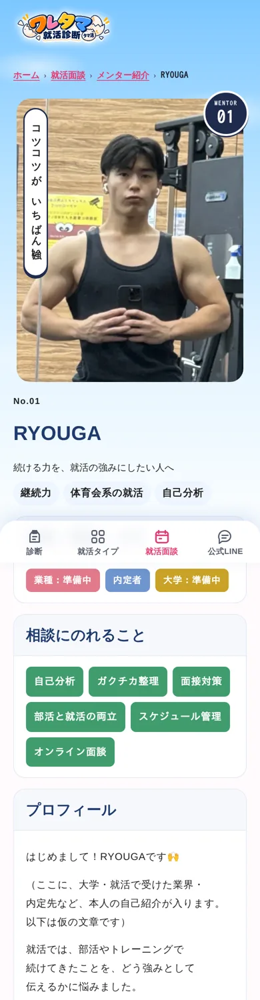
直した後 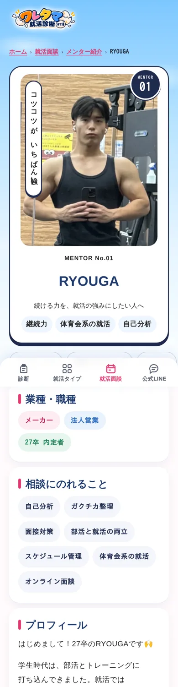
中身を、仮でぜんぶ
どう直した 4名それぞれに、業種・職種・内定者のタグ、相談にのれること（7つ）、自己紹介の文章、こんな人におすすめ（4つ）、相談の進め方を入れました。すべて仮の内容です（ページの下に「プロフィール・業種などは、仮の内容です」と出しています）。大学名は外し、見出しも「業種・職種・大学」から「業種・職種」にしました。書きかえは mentors-data.js です。 レビューを、いったん見えるように
どう直した 本物のレビューがまだないあいだは、「まだレビューはありません。下は、レビューが届いたときの表示イメージ（サンプル）です」と書いたうえで、灰色の「サンプル」のレビューを2件ずつ出します。本物のレビューと見まちがえないよう、★も灰色にし、お名前のかわりに「サンプル」と出しています。本物のレビューが1件でも届くと、サンプルは自動で消えます。レビューの受け取り先（スプレッドシート）がまだないので、いま書いたレビューは、書いた人の端末にだけ「あなたのレビュー（この端末だけに表示）」として残ります。 直した後（サンプルの表示） 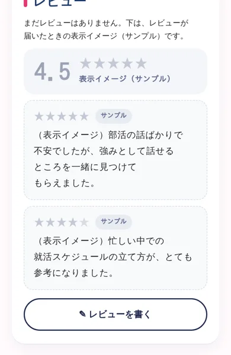
2026-11-01
メンターへのレビューを、書かれたらすぐページに表示 これまでは、届いたレビューを手で足すまでページに出ませんでした。書かれたレビューが、そのままメンターの「詳しく見る」ページに表示されるようにしました。
レビューの保存と表示
どう直した レビューは、Googleスプレッドシートのシート「レビュー」に保存されます。メンターの「詳しく見る」を開くと、そのシートから最新のレビューを読み込み、総合評価（★・平均点・件数）と一緒に、新しい順に表示します。書いた人の画面には、送った直後に「あなたのレビュー」として、すぐ表示されます。
載せたくないとき シートの「非表示」にチェックを入れると、1分ほどでページから消えます。
使い始めるには apps-script/reviews.gs の先頭に、スプレッドシートへの貼りつけ方と公開のしかたを書きました。公開したURLを site-config.js の reviewWebhookUrl に入れると動き始めます（今は空なので、送信も表示もしません）。
確認したこと 仮の受け取り先で、読み込み中の表示、レビューの表示（メンターごとに分かれる）、送信直後の表示、読み込めなかったときの表示、受け取り先が空のときの表示を確かめました。レビューの中にHTMLの記号を書かれても、そのまま文字として表示されること（ページが書きかわらないこと）、スプレッドシートで数式として動かないこと、★が1〜5以外や短すぎる感想は保存されないこと、「非表示」にしたものが出ないことも確かめました。 直した後（仮のレビューで表示を確かめた画面） 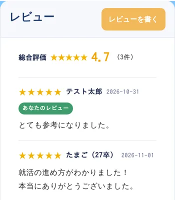
2026-11-01
メンター紹介：お名前と、「詳しく見る」のページを作り直し、レビューを書けるように 4名のお名前を入れ、「詳しく見る」のページを、業種・相談にのれること・プロフィール・レビューに分けた形にしました。メンターへのレビューを書いてもらえるフォームもつけました。
お名前
どう直した 01（ジムの写真）RYOUGA、02（ケーキの写真）AYAKA、03（スタジアムの写真）HARUTO、04（犬との写真）RIONA。 「詳しく見る」のページ
どう直した 写真の下を、4つの箱に分けました。「業種・職種・大学」（色つきのタグ）、「相談にのれること」（緑のタグ）、「プロフィール」（自己紹介の文章と、こんな人におすすめ）、「レビュー」。前後のメンターへのボタンは、番号ではなくお名前にしました。
書きかえ方 業種・大学・自己紹介は、いまは「準備中」と「（仮）」の文章です。mentors-data.js の career・topics・bio・recommend を、本人の内容に書きかえてください。 レビュー
どう直した 「レビューを書く」を押すと、★の評価（必須）・ニックネーム（任意）・感想（必須）のフォームが開きます。送られたレビューは、すぐにはページに出ません。内容を確認してから、mentors-data.js の reviews に足すと、総合評価（★と平均点・件数）と一緒に表示されます。レビューは、メンターの「詳しく見る」のページだけに出し、ホーム画面には出しません。
送信先 電話番号フォームと同じく、Googleスプレッドシート（Apps Script）に送る形です。送信先は site-config.js の reviewWebhookUrl で、空のあいだは「レビューの受付は準備中のため、まだ送信できません」と出て、何も送信しません。
確認したこと ★を選ばないと送れないこと、送信先が空だと送信されないこと、仮の送信先を入れたときに、メンター名・★・ニックネーム・感想だけが送られることを確かめました。レビューを2件足したときの表示（総合評価4.5・2件）も、パソコンの中だけで確認しました（ページには載せていません）。 2026-11-01
メンター紹介を、左右にスワイプするカードに メンター紹介を、1人ずつ大きな写真のカードで、左右にスワイプして見るデザインにしました。メンターの写真を、実際の4名の写真に差し替えました。
写真つきのカードを、左右にスワイプ
どこを 就活面談の「メンターのプロフィールを見る」から開く、メンター紹介のページ（確認用ページ result-preview.html・hatch-preview.html も同じ）
どう直した メンター4名を、番号（MENTOR 01〜04）つきのカードにしました。写真の左には、たて書きのひとこと、写真の下には、お名前・どんな人に向いているか・特徴（タグ）を出しています。カードは左右にスワイプでき、下の「‹」「›」とドットでも切り替えられます。「詳しく見る」を押すと、そのメンターの詳しいページ（プロフィール表・伝えたいこと・話せること・相談の進め方）が開きます。詳しいページから「‹ No.01」「No.03 ›」で前後のメンターへ、「一覧へ」で元のカードに戻れます。これまでの「すべて／自己分析…」の絞り込みボタンは外しました。
書きかえ方 お名前・特徴・プロフィール・文章は、すべて mentors-data.js にまとめました。「準備中」「（仮）」のところを書きかえると、カードと詳しいページの両方に反映されます。写真は assets/mentors/ にあります（スマホの画面のスクショだった2枚は、黒い帯を切り取りました。撮影場所などの情報は消しています）。
確認したこと スマホの幅（390px）とパソコンの幅で、スワイプ・矢印・ドットが動くこと、横にはみ出さないこと、詳しいページへ進んで戻ると同じメンターのカードに戻ること、下のタブは「就活面談」が選ばれたままなこと、エラーが出ないことを確かめました。 詳しく見るのページ 直した後
お名前・大学・内定先・タマ活タイプは「準備中」、特徴と紹介文は写真の雰囲気から入れた「仮」です。本人に確認して、mentors-data.js を書きかえてください。
2026-10-31
下のタブから「メンター紹介」を外し、就活面談の中から見られるように 下のタブを「診断／就活タイプ／就活面談／公式LINE」の4つにしました。メンターの紹介は、就活面談の中の「メンターのプロフィールを見る」から見られます。
メンター紹介を、就活面談の中へ
どこを 画面の下のタブ、メンター紹介のページ、メンターのプロフィールのページ（確認用ページ result-preview.html・hatch-preview.html も同じように直しました）
どう直した 下のタブから「メンター紹介」を外し、4つのタブを横いっぱいに並べました。就活面談の「メンターのプロフィールを見る」ボタンから、これまでどおりメンター紹介のページへ進めます。メンター紹介・プロフィールのページを見ているときは、下のタブの「就活面談」が選ばれた状態になります。メンター紹介のページの上に「就活面談 › メンター紹介」、プロフィールのページの上に「ホーム › 就活面談 › メンター紹介 › 名前」の戻り道をつけました。診断結果の画面の「メンターの話を聞いてみる」ボタンは、そのまま使えます。
なぜ メンターとの話は面談の一部なので、タブを分けずに、就活面談の中から見てもらうため。
確認したこと スマホの幅（390px）とパソコンの幅で、4つのタブがすべて開くこと、横にはみ出さないこと、就活面談→メンター紹介→プロフィール→就活面談と行き来できること、エラーが出ないことを確かめました。 直す前 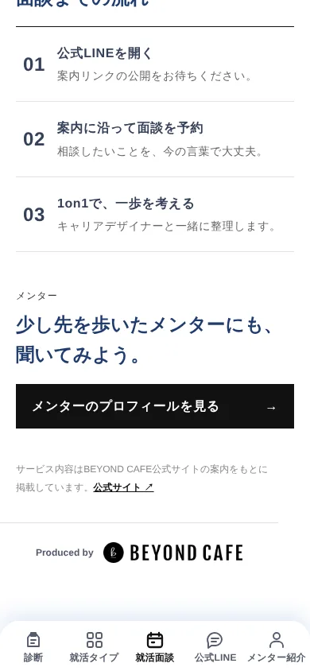
直した後 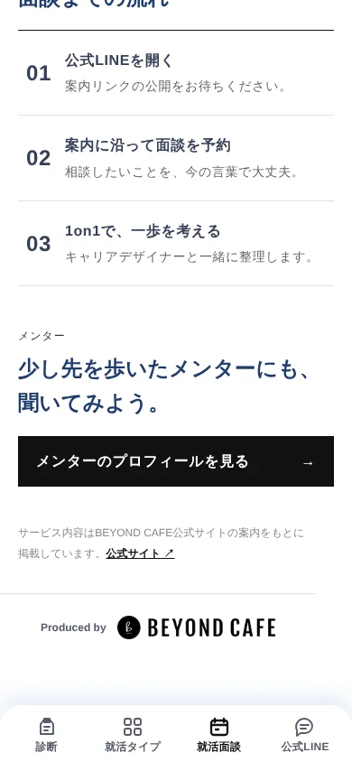
2026-10-30
電話番号の入力画面：同意のチェックと、架電管理シートへの送信 電話番号を入力してもらう画面に、電話をかける目的の説明と、同意のチェック欄を入れました。あわせて、入力内容を架電管理用のGoogleスプレッドシートへ送る仕組みを入れました（送信先はまだ設定していないので、今は何も送信されません）。
同意のチェック欄と、送信の仕組み
どこを 診断の最後の、電話番号・性別・メールアドレスを入力する画面
どう直した 「画面確認用の試作です」の文を、電話でのご案内についての説明に変えました（文言は仮で、先輩が正式な文言を作成中）。その下に「上記を確認し、面談のご案内のお電話を受けることに同意します」のチェック欄（必須）を足しました。チェックしないと「次へ」に進めません。チェックして「次へ」を押すと、ニックネーム・電話番号・メール・性別・卒業年度・診断タイプ・同意した文言の版（v1）を、架電管理シートへ送ります。送信先は site-config.js の webhookUrl で、空のあいだは送信しません。同じ電話番号は1回だけ送ります。
確認したこと パソコンの中だけの仮の受け取り先で試して、チェックなしでは送信されずエラーが出ること、チェックありで1件だけ正しい内容が届くこと、2回押しても1件だけなことを確かめました。スマホの幅（390px）で、横にはみ出さないことも確認しました。 直す前 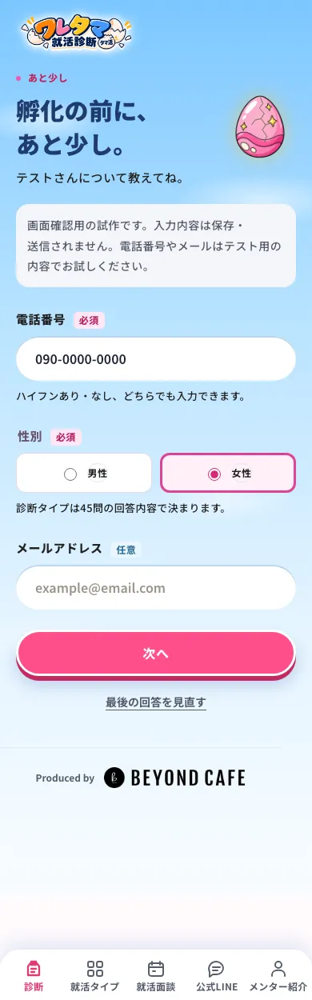
直した後 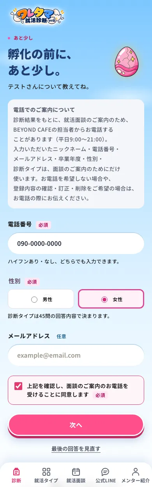
2026-10-29
トップ：入力欄の重なりを直し、ボタンを小さく 前回の修正では、入力欄が、下の列のキャラクターの足もとに、まだ少しかかっていました。絵の中の、足の位置を測り直して、直しました。
入力欄をキャラクターから離し、ボタンを小さくする
どこを トップ画面の、ニックネームの入力欄と、「わたしのタイプを見つける」ボタン
どう直した 絵の中の、ひつじ・きつねの足が、絵の縦の約95%の位置にあることを測りました。その下の、床と花の部分を少し切って、絵を短くしました（キャラクターは欠けていません）。入力欄は、足もとの下（約8〜9pxの余白）に置きました。入力欄とボタンは、高さを46pxにして、文字も15pxに小さくしました。入力欄とボタンの間の、すきまも詰めました。
確認したこと iPhoneのSafariと同じ描画エンジンで、3つの大きさ（iPhone SE、iPhone 13、iPhone 14 Pro Max）の、足もとと入力欄の位置を測りました。どの大きさでも、重なりは、ありません。iPhone 13と14 Pro Maxでは、ボタンも、最初の画面に収まります。iPhone SEは、ボタンの下の端が、タブに、約11pxかかります。 直す前 直した後 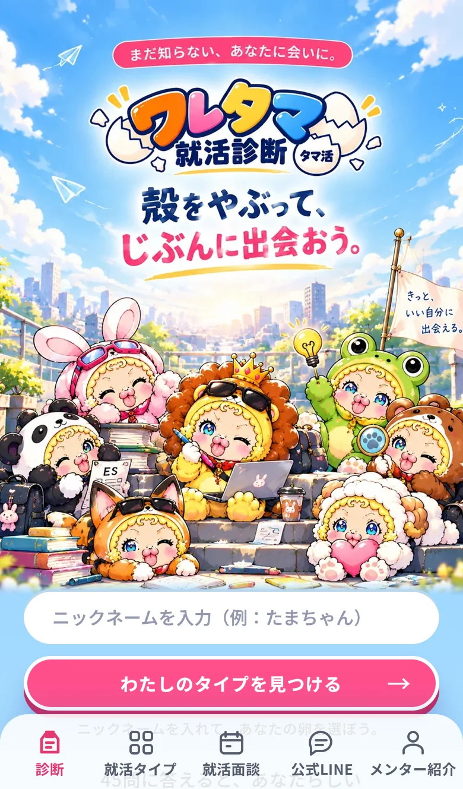
2026-10-29
トップ：入力欄がキャラクターに重なるのを直す トップの新しいタイトル画像の下の方に、ニックネームの入力欄が、下の列のキャラクター（ひつじ・きつね）に重なっていました。
入力欄を、キャラクターの足もとの下に
どこを トップ画面のニックネーム入力欄と、ボタン
どう直した 入力欄を、キャラクターの足もとより下に下げました。そのままだと、ボタンが画面の下のタブに隠れるので、入力欄の高さ（56px→50px）と、入力欄とボタンの間の余白を、少し詰めました。
確認したこと iPhoneのSafariと同じ描画エンジンで、入力欄がキャラクターに重ならないこと、ボタンが最初の画面に入ることを測りました。（iPhone 13の画面の高さで確認）小さめのiPhone SEでは、ボタンの下の端が、タブに、わずかに（約9px）かかります。 直す前 直した後 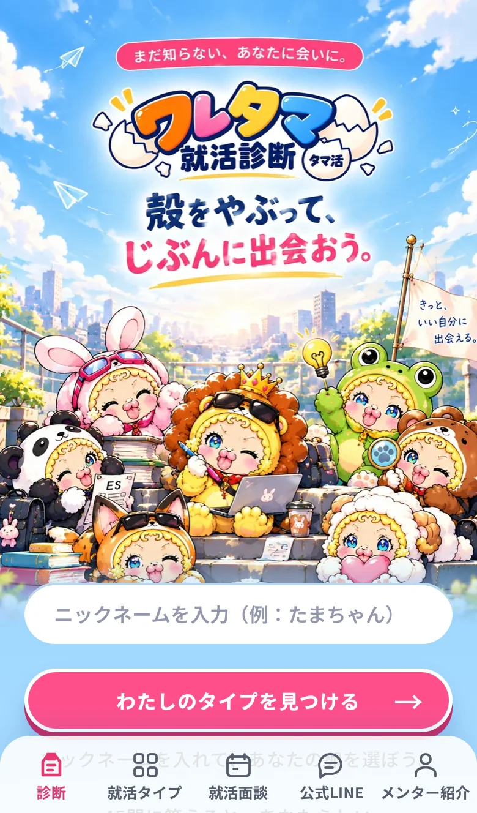
2026-10-29
トップ画面を、新しいタイトル画像に 用意してもらった、ロゴ・キャッチコピー・キャラクターが一枚になったタイトル画像を、トップの一番上に入れました。
タイトル画面を、一枚絵に
どこを トップ画面（最初に開く画面）
どう直した 絵の中に、ロゴ、「まだ知らない、あなたに会いに。」、「殻をやぶって、じぶんに出会おう。」が入っているので、ページ側の同じ文字は、画面から外しました（読み上げ用には残しています）。上のロゴの帯も、トップでは出さずに、絵の一部にしました。絵の下の端は、ふんわり透明にして、空の背景につなげました。
入力欄の位置 絵が大きいので、ニックネームの入力欄と「わたしのタイプを見つける」ボタンを、絵のすぐ下に上げました。iPhoneのSafariの、画面の高さ（約664px）でも、最初の画面で、ボタンまで見えます。入力欄の上の文字は、キャラクターに重なって読みにくいので、入力欄の中の案内文（「ニックネームを入力（例：たまちゃん）」）に移しました。説明文（「45問に答えると…」）は、入力欄の下に回しました。
なぜ 最初に目に入る画面で、世界観とやることが、一度に伝わるようにするため。 確認したこと・気になる点
iPhoneのSafariと同じ描画エンジンで、11画面とも、横スクロールがなく、12px未満の文字もありません。ニックネームを入れて、卒業年度の画面へ進む流れも動きます。気になる点は、絵の文字（見出し、旗の「きっと、いい自分に出会える。」）が、画像の一部なので、あとから文言を変えるときは、絵の作り直しが必要なことです。
2026-10-29
公式LINEタブの絵を、新しい一枚絵に 用意してもらった、「モヤモヤの雲」から「明るい道」へ進むキャラクターの絵を、公式LINEタブの一番上に入れました。
絵を差し替えて、空の背景になじませる
どこを 公式LINEタブの一番上の絵
どう直した 絵の上下左右の端を、ふんわり透明にして、ページの空の背景につなげました。右端には看板（自己分析・業界研究・ES・面接対策・内定）があるので、右だけは、ぼかす幅を狭くして、看板が欠けないようにしました。四角い枠や縁の線は、ありません。絵そのものは、描き直していません。
なぜ 左の「面接どうしよう…」「自己分析がむずかしい…」の悩みから、右の道へ進む流れが、公式LINEで相談してもらう、という案内の内容と合っているため。 気になる点
絵の右上の旗の文字が、「やりたい未来へ」になるはずの部分で、文字がくずれて読めません（絵の中の文字なので、私は直していません）。旗の文字を読める形に直した絵に、差し替えるのがおすすめです。
2026-10-29
メンター紹介の絵を、新しい一枚絵に 用意してもらった、メンターに質問するキャラクターの絵を、メンター紹介の一番上に入れました。
絵を差し替えて、背景の空になじませる
どこを メンター紹介タブの一番上の絵と、その下の見出し
どう直した 絵の上下左右の端を、ふんわり透明にして、ページの空の背景につなげました。絵の上端の空の色が、ページの空とほぼ同じ色だったので、境目が見えません。四角い枠や縁の線は、ありません。絵そのものは、描き直していません。見出しは、「就活を終えた／メンターに、／気軽に聞いてみよう。」と、意味の区切りで3行に分けました。
なぜ これまでは、別の絵（レースの絵）に、「一緒に考えよう」の吹き出しを重ねていました。この絵は、質問の吹き出しや、本がまとまっていて、メンター紹介の内容に合っているため。 直す前 直した後
気になる点
絵の中の看板と吹き出しの文字が、「先輩に聞いてみよう！」「先輩学生」になっています。タブの名前を「メンター」にしたので、ここだけ、呼び方がずれています。絵の中の文字は、描き直しになるため、そのままにしています。
2026-10-29
LP全体の文字を、1つの基準にそろえる 画面ごとに文字の大きさ・太さ・字間がばらばらだったので、全画面で、同じ基準にそろえました。（就活面談タブは、BEYOND CAFEの白黒デザインなので、除いています）画像は、iPhoneのSafariと同じ描画エンジンで撮っています。
基準（これからは、この表の大きさだけを使う）
種類 大きさ 太さ 行間 大見出し 30px 900 1.4 中見出し 22px 800 1.5 小見出し 18px 800 1.5 本文 15px（PCは16px） 500 1.85 注意書き・補足 13px 500 1.7 ラベル・タグ 12px 800 1.4 ボタン 16px 800 1.4
字間は、全体を少し広げました（本文0.04em）。文字のスタイルの種類は、89種類から65種類 に減りました（残りは、画面ごとの特別な部品です）。
トップ
どこを トップ画面
どう直した 見出し・本文・ボタンを、上の基準に。本文の中央寄せと、行の長さのそろえ（文の途中で切れにくくする）をしました。
なぜ 大きさと太さがばらばらで、読む順番が伝わりにくかったため。 直す前 直した後
見出しの「キーワード」だけ色をつける
どこを 就活タイプ一覧、メンター紹介、公式LINEの大見出し
どう直した 「どの就活タイプ ？」のように、キーワードだけをピンクにしました。（参考LPの、青い大きなキーワードにならいました）
なぜ 見出しの中で、一番伝えたい言葉を、目に入りやすくするため。 直す前 直した後
設問画面
どこを 設問画面
どう直した 設問の文は19px、案内文は15px、ラベルは12pxにそろえました。
なぜ 同上 直す前 直した後
タイプ詳細
どこを 就活タイプの詳細ページ
どう直した 見出しの階層（22px・18px）と、本文（15px）を、はっきり分けました。
なぜ 同上 直す前 直した後
結果画面の本文
どこを 結果画面の本文（GDでの役割・今日の小さな一歩・8つの項目）
どう直した 見出し・本文・ラベルを、基準にそろえました。本文は、黒に近い1色です。
なぜ 同上 直す前 直した後
メンターの詳細
どこを メンター紹介の詳細ページ
どう直した 名前（大見出し）、ラベル、本文の大きさを、基準にそろえました。
なぜ 同上 直す前 直した後
確認したこと
iPhone（WebKit）で、11画面とも、横スクロールが出ないこと、12px未満の文字がないことを測りました。設問・採点・結果の文章・孵化動画・ロゴ・キャラクターの絵は、変えていません。
2026-10-29
文字づかいの見直しと、メンター紹介タブ 「就活面談タブだけチープに見えない」という声を受けて、文字のところを、参考LP（マイキャリ）を参考に見直しました。下の画像は、iPhoneのSafariと同じ描画エンジン（WebKit）で撮ったものです。
iPhoneで、単語の途中で改行されていたのを直した
どこを 就活タイプ一覧など、全画面の見出しと本文
どう直した これまでは、改行の設定がChromeにしか効かず、iPhoneのSafariでは「就活タ／イプ」のように、単語の途中で切れていました。Googleが公開している日本語の文節分割（BudouX）を入れて、「どの／就活タイプ？」のように、文節の区切りで改行するようにしました。
なぜ iPhoneで見たときに、不自然な改行が出ていたため。（回答者の8割以上がiPhoneでした） 直す前 直した後
タイプ詳細の改行
どこを 就活タイプの詳細ページ
どう直した 「仲間を巻き／込んで」「人。」だけが残る行を、「仲間を／巻き込んで、新しい成果を取りに／いく人。」に直しました。
なぜ 同上 直す前 直した後
結果画面の文字を、読みやすく
どこを 結果画面の本文と見出し
どう直した 本文の色を、似た紺色の数種類から、黒に近い1色に統一しました。字間を広げ（0.04em）、行間は1.85にそろえました。ピンクの小さな見出しは、濃いピンクにして読みやすくしました。見出しは、最後の行に1〜2文字だけ残らないよう、行の長さをそろえます。
なぜ 紺色が8種類以上混ざって濁って見え、薄い文字もあったため。 直す前 直した後
公式LINEタブも同じ文字づかいに
どこを 公式LINEタブ
どう直した 同上
なぜ 全タブで、文字づかいをそろえるため。 直す前 直した後
「先輩紹介」を「メンター紹介」に
どこを 画面下のタブの名前、ページの見出し、文中の「先輩」
どう直した タブの名前を「メンター紹介」にしました。文中の「先輩」「先輩学生」も、「メンター」にそろえました。
なぜ メンターという呼び方に統一するため。 直す前 直した後
メンターのカードを、参考LPの見た目に
どこを メンター紹介のカード
どう直した 大きな写真、名前、「タマ活タイプ」「得意な相談」のラベル、「メンターからひとこと」の吹き出しの形にしました。横にスワイプして見られるのは、これまでと同じです。写真とプロフィールは、仮のサンプルです（「仮プロフィール」と表示）。
なぜ 参考LPの「アドバイザー紹介」のように、顔と一言で、人柄が伝わるようにするため。 直す前 直した後
そのままにしたところ・補足
就活面談タブ（BEYOND CAFEの白黒）は、変えていません。設問・採点・結果の文章・孵化動画・5つのタブ（名前以外）・ロゴ・キャラクターの絵も、変えていません。アンケートフォームの質問文に「先輩紹介のタブ」と書いてある部分は、まだ直していません。
2026-10-29
UIの全面リニューアル：「つながる空の世界」 星のカービィ・たまごっちの公式サイトを参考に、ページ全体を空の背景でつなげ、キャラクターと背景がなじむ見た目に変えました。キャラクターの絵は、描き直していません。
トップ：白い背景を透明にして、空になじませる
どこを トップ画面のキャラクターのイラスト、上の帯、ボタン
どう直した イラストの外側の白い部分を、透明にしました（絵の中の雲やキラキラは、そのままです）。画像の縁に焼き込まれていた細い線と、小さな切れ端も取りました。色を混ぜる重ね方をやめたので、色のにごりもありません。ロゴの後ろの水色の帯を消して、ロゴを空に浮かせました。ボタンは、白い縁つきの立体的な丸ボタンです。
なぜ 画像に線が見えて、色が混ざって、チープに見えていたため。 直す前 直した後
卒業年度の画面を、空の世界に
どこを 卒業年度を選ぶ画面
どう直した 背景を空に変え、卵のカードをやわらかく浮かせました。ボタンは、立体的な丸ボタンです。
なぜ 全画面を、同じ世界観にそろえるため。 直す前 直した後
設問画面：上の枠を、すりガラスのカードに
どこを 設問画面の上（卵と進捗）、設問のカード、下のボタンの帯
どう直した 上の四角い白い枠を、角丸のすりガラスのカードにしました。進捗バーは、丸いピンクです。設問のカードは、白い縁つきで、空に浮かびます。下のタブとボタンの帯は、線をやめて、ふんわり影で浮かせました。
なぜ 白い四角い枠と線が、硬くて、チープに見えていたため。 直す前 直した後
結果画面：白い帯と縦線をなくして、カードを浮かせる
どこを 結果画面の全体
どう直した 世界の絵を、空の中に浮かせました。見出しの縦線と、白い横長の帯をなくしました。本文や4つの傾向は、白い縁つきの半透明のカードに入れて、空に浮かべています。
なぜ 線や帯があると、世界観がずれて見えていたため。 直す前 直した後
就活タイプ一覧
どこを 就活タイプ一覧
どう直した 空の背景の上に、キャラクターを並べる形にしました。
なぜ 同上 直す前 直した後
就活タイプ詳細
どこを 就活タイプの詳細ページ
どう直した 世界の絵と文章を、空の背景の中に置きました。
なぜ 同上 直す前 直した後
公式LINE（先輩紹介も同じ）
どこを 公式LINEタブ、先輩紹介タブ
どう直した 上の絵を、空にそのままなじませ、カードを半透明にしました。
なぜ 同上 直す前 直した後
PC表示
どこを パソコンで開いたとき
どう直した 空の背景が、窓いっぱいに広がります。中央の列にそろえた下のタブも、ふんわり浮いています。
なぜ PCでも、同じ世界観にするため。 直す前 直した後
そのままにしたところ
就活面談タブは、BEYOND CAFEの白と黒のデザインのままです（空の背景は、適用していません）。設問・採点・結果の文章・孵化動画・5つのタブ・ロゴ・キャラクターの絵は、変えていません。確認として、全11画面で、横スクロールが出ないことと、12px未満の小さい文字がないことを測りました。
2026-10-28
再テストの準備：集計シートの修復と依頼文の更新 新しい版（設問v3・結果v4・新しい画面）で、もう一度テストをしてもらうための準備です。
アンケートの「集計」シートを直した
どこを アンケート回答のスプレッドシートの「集計」タブ
どう直した 見出しの文字が「＝」から始まっていて、数式と読まれ、全体がエラー（#NAME?・#ERROR!）になっていました。作り直して、回答がたまると自動で更新される形にしました。
見られる項目 回答数／16タイプの出方（理想6.25％との差つき）／各軸で左側だった人の割合／納得度の平均／4軸の一致度／画面の評価の平均／タブの評価の平均と「見ていない」人数／孵化動画の印象／かかった時間／端末・ブラウザ／おすすめ度
確認したこと 前回の15人分で、数字が元の回答と合うことを確認しました。（ACTG 6人、納得度の平均4.33、おすすめ度の平均9.0 など） テスト依頼の文章（Notion用）を今の版に更新
どう直した テスト用リンクとアンケート（Googleフォーム）のリンクを入れました。所要時間を「診断約5分＋アンケート約5分」に直し、「診断の続きから」「前回の結果を見る」の案内と、ブラウザは何でもよいことを足しました。 2026-10-28
結果画面：キャラクターを「世界の中」に見せる 結果画面のキャラクターが、背景から浮いて、ステッカーに見えていました。16タイプすべてで、そのタイプの「世界の絵」で見せる形に変えました。画像の描き直しは、していません。
ステッカーから、世界の絵へ（深夜2時のカウンセラー）
どこを 結果画面の一番上（タイプ名・キャラクター・背景）
どう直した キャラクターが、そのタイプの世界の中にいる絵（就活タイプ詳細ページと同じ絵）に切り替えました。上にタイプ名とコードのタイトル画像を置きます。背景は、そのタイプの色をうすめた空の色にして、絵の下を白になじませます。ふわっと光る粒（ゆっくり点滅）も重ねました。
なぜ 白いふちのあるステッカーを、平らな青い背景に置くと、「貼ったシール」に見えるため。 直す前 直した後
ステッカーから、世界の絵へ（アクセルジャンキー）
どこを 同上
どう直した 同上。タイプごとに、空の色が変わります。（ACTGはピンク）
なぜ 同上 直す前 直した後
キャラクターが小さくなる点の補い
どこを 結果画面の、世界の絵のすぐ下
どう直した 世界の絵は、横幅いっぱい（画面より少し広く）で表示します。さらに、文字入りの大きなステッカーは、「文字入りのタイプカードを見る」ボタンにして、ここから大きく見られるようにしました。
なぜ 世界の絵では、キャラクターがステッカーより小さくなるため。 全16タイプのうち、8タイプ 全16タイプのうち、別の4タイプ
2026-10-28
UIの改善：5つの見直し スマホ幅で全画面を見直して、気になった5点を直しました。
押せない「公式LINE」ボタンを、グレーに
どこを 公式LINEタブの「公式LINEのご案内は準備中」ボタン
どう直した 押せるピンクのままだったボタンを、グレーにしました。リンクが入ったら、元のピンクに戻ります。
なぜ 押しても何も起きないのに、押せそうな色だったため。 直す前 直した後
就活タイプの詳細ページに、項目を追加
どこを 就活タイプ一覧から開く、タイプごとの詳細ページ
どう直した これまでの「強み」「GDの役割（一言だけ）」「今日からできること」に加えて、「つまずきやすいところ」「GDでの役割の説明」「向いている仕事と業界」を足しました。それぞれ、見出しに色の縦線をつけ、最初に一言を太字で出します。文章は、結果画面と同じ新しい版（v4）のものです。
なぜ 情報が少なく、下に空白が出ていたため。シェアされやすいページなので、内容を厚くしました。 直す前 直した後
結果画面のキャラクターの背景を、白になじませる
どこを 結果画面の一番上（キャラクターの背景の下の端）
どう直した 四角く切れていた下の端を、白にやわらかくつながるようにしました。キャラクターの画像自体は、変えていません。
なぜ 背景が硬い箱に見えていたため。 直す前 直した後
小さすぎる文字を、読める大きさに
どこを 下の5つのタブ、設問画面（設問番号・状態・進捗・案内文）、入力画面の「必須」「任意」など
どう直した 9〜11pxだった文字を、12px以上にしました。設問画面の案内文（「ふだん、リラックスしているときの自分で答えてね」）は、13pxで、色も濃くしました。
なぜ スマホで読みにくかったため。全10画面を測って、12px未満の文字がないことを確認しました。 直す前 直した後
トップ画面の、イラストの縁と余白
どこを トップ画面（キャラクターのイラストの左右、「診断でわかること」の前）
どう直した イラストの左右の縁を、ぼかして背景になじませました。「診断でわかること」の前の余白を、少し詰めました。
なぜ イラストの左右にうっすら縁が見えていたため。 直す前 直した後
2026-10-28
診断結果の偏りの検証（設問v3） 新しい設問45問（v3）で、特定のタイプに偏らないかを、計算で確かめました。結論：設問の作りに、大きな偏りはありませんでした。
やったこと
方法 実際の採点ロジック（逆向きの設問の反転、軸ごとの％、50％のときの決め手の設問）をそのまま使い、回答をコンピューターで作って、5つの条件で各20万人分、診断しました。
見たこと 16タイプの出方、出ないタイプがないか、同点になる軸の数、50％前後になる軸の数。 条件 16タイプの出方 最大÷最小 完全ランダム（1〜5を同じ確率で） 最多 6.8％、最少 5.8％（理想は6.25％） 1.2倍 本人の傾向あり（現実に近い想定） 最多 6.5％、最少 5.9％ 1.1倍 「あてはまる」と答えやすい人（弱め） ASTG・ACTGがやや多く、DCIPがやや少ない 1.3倍 「あてはまる」と答えやすい人（強め） ASTG 7.9％、ASTP 7.5％が多く、DCIP 4.9％が少ない 1.6倍 挑戦・協働・自己実現が同時に高い人が多い集団 ACTG 11.6％、ASIP 11.0％が多く、DSIG 4.0％が少ない 2.9倍（集団の偏りによる）
どの条件でも、出ないタイプは0でした。
わかったこと
設問の偏り 各軸で、左側（A・C・T・G）が選ばれる割合は、50〜51％。均等でした。
同点・半々 1人あたり、同点の軸は0.12個（約8人に1人が、どこかの軸で同点）。45〜55％の軸は0.6個。「％が半々で説明と合わない」という声は、この数字のためです。％の横に「やや〜寄り」を足して対応しました。
わずかな傾き 設問数が、行動A6・D5、環境S6・C5、関係T6・I5と、片方が1問多い軸があります。何でも「あてはまる」と答える人は、A・T・Sに少し寄ります。極端な結果にはならないので、直していません。
アンケートとの関係 テスト回答15人のうち、ACTGは6人（40％）でした。計算上は、設問の偏りが主な原因ではなさそうです。回答者が、運営の知り合いの学生中心だったことが、影響した可能性があります。古い設問でも、ほぼ同じ計算結果でした。
当てはまり度 「結果のタイプが自分に当てはまる」（4か5）は、15人中14人でした。 この検証でわからないこと
計算で見ているのは、設問の「作り（向きと数）」だけです。設問の言い方による答えやすさや、答えを誘導していないかは、見られません。新しい設問のまま、15〜30人に答えてもらうテストで、実際の偏りを確かめる必要があります。
2026-10-28
公開前の仕上げ：PC表示とシェア画像 公開前チェックのうち、画面だけで直せる2点を直しました。
PC表示で、下のタブを中央の列にそろえる
どこを パソコンで開いたときの、画面下の5つのタブ（診断・就活タイプ・就活面談・公式LINE・先輩紹介）
どう直した これまでは、タブが画面いっぱいに広がり、中央の細い画面と離れていました。画面と同じ幅（560px）にそろえ、上の角を丸くしました。
きっかけの声 公開前チェック「PC表示を整える」 直す前 直した後
PC表示で、設問の「次の4問」バーもそろえる
どこを パソコンで開いたときの、設問画面の下のバー
どう直した これまでは、画面より広い幅で表示されていました。中央の列と同じ幅にそろえました。
きっかけの声 公開前チェック「PC表示を整える」 直す前 直した後
LINEやSNSで、リンクを貼ったときの画像と説明文を追加
どこを リンクをLINE・Xなどに貼ったときに出るカード（プレビュー）
どう直した タイトル、説明文、画像（キャラクターとキャッチコピー、BEYOND CAFEのロゴつき）を設定しました。これまでは、画像のないリンクだけが出ていました。画像のURLは、いまのテスト用アドレスです。本番のアドレスに移すときに、書き換えが必要です。
きっかけの声 「シェアしたくなる」「絶対バズる」（シェアされたときの見え方を整える） シェア時に出る画像（新規）
2026-10-28
回答にかかる時間の不安を減らす 「質問が長い」「10〜15分かかった」という声を受けて、設問の数は変えずに、時間の見通しと、途中からの再開を足しました。
設問画面に「あと約○分」を表示
どこを 設問画面の上の進捗（「3 / 45問 回答」の横）
どう直した 回答した数に合わせて、残りの目安時間を表示します。（1問6秒で計算。45問で約5分）
きっかけの声 「質問が長すぎる。脱落する人がいそう」「10〜15分かかった」 直す前 直した後
トップに「約5分で完了」と、「診断の続きから」ボタンを追加
どこを トップ画面（ニックネーム入力の下、数字の行）
どう直した 数字の行に「約5分で完了」を足しました。途中までの回答は端末に保存され、トップの「診断の続きから（3 / 45問 回答済み）」で再開できます。結果が出たら、保存は消えます。
きっかけの声 「質問が長い」「ブラウザを閉じると戻れない」 直す前 直した後
2026-10-28
結果画面の下から、先輩紹介・面談へ進みやすく アンケートで、先輩紹介・面談のタブを「見ていない」と答えた人が3人いました。結果を見たあとの流れに、入口を足しました。
「先輩の話を聞いてみる」「就活面談について知る」ボタンを追加
どこを 結果画面の一番下（「次は、あなたの話を聞かせて。」のカード）
どう直した カードの中に、先輩紹介へ進むボタンと、面談の説明へ進むボタンを置きました。これまであった「就活について相談する」ボタンは、この2つに分かれたので外しました。「「次へ」で面談相手の一覧へ進みます」という、画面と合っていない説明文も外しました。
きっかけの声 先輩紹介・面談タブを「見ていない」3人 直す前 直した後
2026-10-28
卒業年度の画面：ボタンの位置と、卵の表示 画面幅が中くらい（約550px。大きめのスマホの横向きや、小さめのウィンドウ）のときに出ていたずれを直しました。
「診断をはじめる」ボタンを、卵のカード列と同じ幅で中央に
どこを 卒業年度を選ぶ画面（卵のカードの下のボタン）
どう直した ボタンの幅が古い設定（最大420px）のままで、左に寄っていました。卵のカード3つと同じ幅にそろえ、「ニックネームを変更」も中央にしました。
きっかけの声 「ボタンの配置がおかしい、重なっていない」 直す前 直した後
卵のイラストが空白になることがあるのを防止
どこを 卒業年度を選ぶ画面の3つの卵
どう直した 画面を開く前に、卵の画像を先に読み込んでおくようにしました。画像の表示も「読み込んだら、すぐ描く」方式に変えました。
きっかけの声 卵が空白のまま表示されたスクショ（左が実際の画面） 直す前 直した後 2026-10-28
アンケートの声を受けた4つの改善 テスト回答15人のアンケートから、すぐ直せる4点を直しました。
孵化動画が進まないとき、すぐ結果へ進めるように
どこを 診断のあとの「孵化動画」の画面（右上のボタン）
どう直した 6秒たっても動画が始まらないとき、右上のボタンが「演出をスキップ」から「結果を見る」に変わり、大きく目立つようになります。
きっかけの声 「スキップしたい」4人、「再生されなかった・止まった」2人 直す前 直した後
診断の結果を、あとから見返せるように
どこを トップ画面（ニックネーム入力の下）
どう直した 結果をその端末に保存し、トップに「前回の結果を見る（○○さん）」ボタンを追加しました。ブラウザを閉じても、同じ端末なら結果に戻れます。
きっかけの声 「診断後にブラウザを閉じたら、もう見れない」 直す前 直した後
4軸の％に、言葉を添えて読みやすく
どこを 結果画面の「あなたの4つの傾向」
どう直した ％の横に、強さに合わせて「やや／かなり／とても〜寄り」を足しました。（51〜55％はやや、56〜65％は寄り、66〜75％はかなり、76％以上はとても）
きっかけの声 「結果の％が難しかった」 直す前 直した後
設問を答えるときの心構えを追加
どこを 設問の画面（上の案内文）
どう直した 「ふだん、リラックスしているときの自分で答えてね」の一文を足しました。
きっかけの声 「どの自分で答えればいいか分からない」 直す前 直した後
2026-10-28
設問45問（v3）と診断結果16タイプ（v4）に差し替え Googleドキュメントの「設問（修正したやつ）」「診断結果（修正したやつ）」を反映しました。
結果の文章を新しい版に入れ替え
どこを 結果画面（導入文〜強み・GDでの役割）、設問の画面
どう直した 導入文の最後に「逆の面」の一文を追加。「一言でいうと」と、タイプごとの総括2文を追加。定型の総括文はやめました。設問45問も新しい版に入れ替え、同点のときの決め手の設問番号も直しました。（例：寄り添い伴走者のGDの役割は「書記」に）
きっかけの声 「％は半々なのに説明が片寄っている」「強みや弱みを一言で知りたい」「質問が似ている」 直す前 直した後
← タマ活のテスト版へ戻る